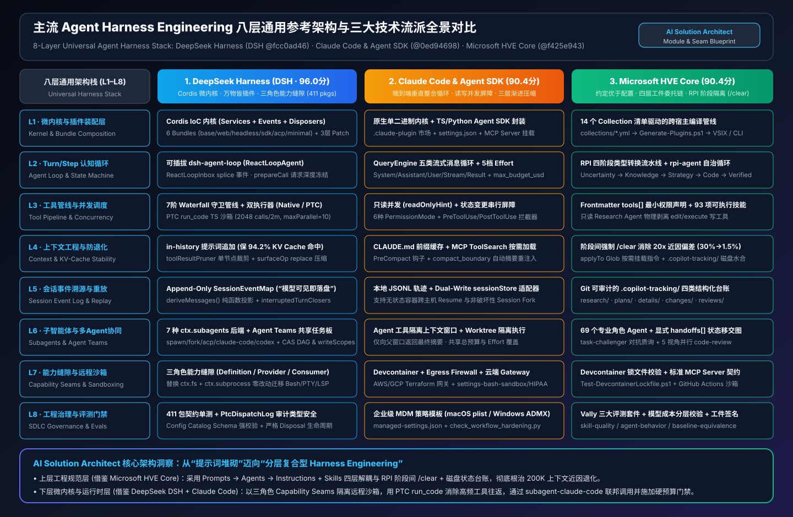
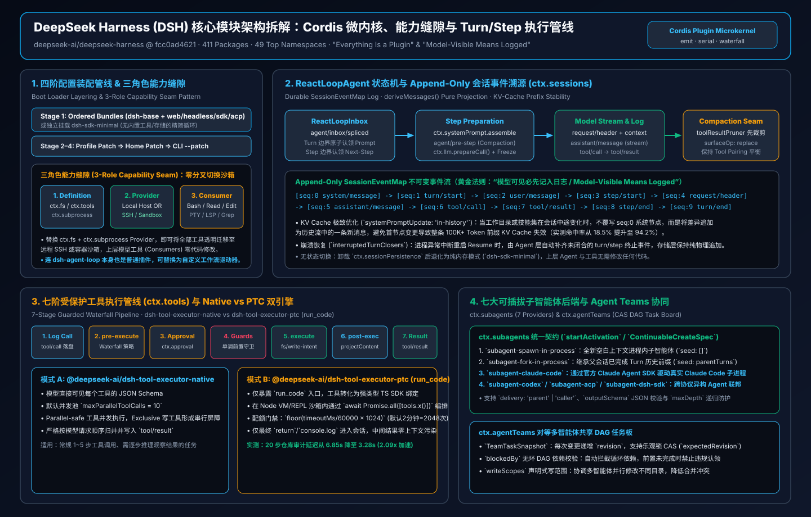
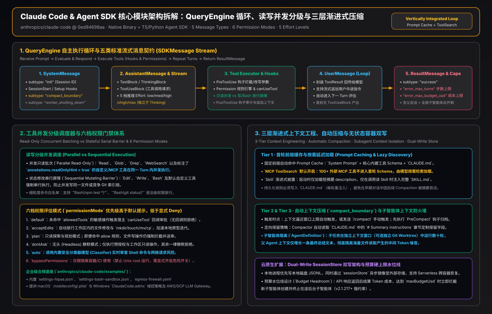
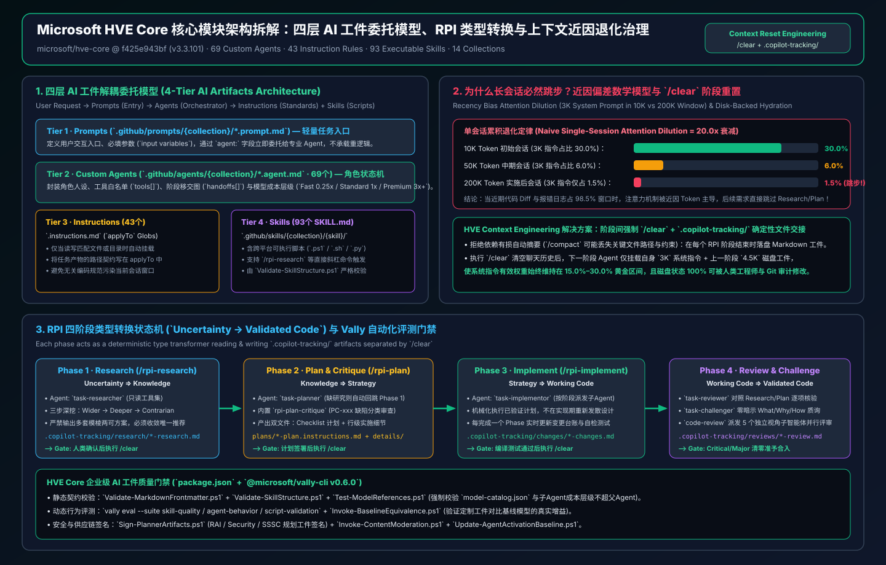

八层通用 Harness 架构栈 (点击层级查看三框架实现源码契约)
Click any layer (L1–L8) to inspect DeepSeek DSH, Claude Code, and Microsoft HVE-Core implementation mechanisms.
四大核心模块架构图 (SVG Vector Architecture Diagrams)
点击右上角链接可单独全屏查看矢量 SVG
图 1 · 八层通用 Harness 架构栈与三大技术流派全景对比
Open SVG ↗

图 2 · DeepSeek Harness (DSH) Cordis 微内核与能力缝隙拆解
Open SVG ↗

图 3 · Claude Code & Agent SDK 循环、并发屏障与三层压缩
Open SVG ↗

图 4 · Microsoft HVE Core 四层工件委托与 RPI 阶段隔离
Open SVG ↗

工具执行管线与 Turn/Step 状态机交互仿真器 (Serial vs. Native Parallel+Barrier vs. DSH PTC `run_code`)
模拟真实工具批次在三种执行模式下的端到端延迟、模型往返步数 (Model Steps)、中间 Token 污染量，以及 DeepSeek DSH PTC 配额门禁公式
floor(timeoutMs / 60000 × maxSubCallsPerMinute)。
上下文工程、近因偏差 (Recency Bias) 与 KV-Cache 前缀命中率计算器
基于 Microsoft HVE Core (`docs/rpi/context-engineering.md`) 与 DeepSeek DSH (`systemPromptUpdate: 'in-history'`) 数学模型，实时计算指令注意力权重稀释倍数、跳步风险与 KV Cache 成本节省。
DeepSeek DSH · 7-Provider 联邦 + CAS 任务板
packages/subagent/* & packages/team/*
DSH 将“子智能体委派契约 (`ctx.subagents`)”与“底层执行运行时”彻底解耦，内置 7 种可热插拔 Provider，并支持对等 Agent Teams 共享無环 DAG 任务板：
// 1. Continuable Subagent 委派契约
const run = await ctx.subagents.startActivation({
provider: 'claude-code', // or spawn-in-process | fork-in-process | acp | codex | dsh-sdk
delivery: 'parent', // 'parent' | 'caller'
seed: parentCompletedTurns,
outputSchema: ReviewResultSchema,
maxDepth: 3,
});
// 2. Agent Teams CAS 乐观锁任务认领
await ctx.agentTeams.updateTask({
taskId: 'auth-migration',
expectedRevision: 4, // CAS conflict check
blockedBy: ['schema-audit'],
writeScopes: ['src/auth/**']
});
Claude Code · 上下文防火墙 + 共享硬预算
AgentDefinition & max_budget_usd (v2.1.217+)
Claude Code 子智能体在独立上下文窗口（可选独立 Git Worktree）中执行海量搜索与测试，父窗口仅增加一条精简总结，且父子共享美元硬上限：
for await (const msg of query({
prompt: "Refactor auth and verify tests",
options: {
maxBudgetUsd: 2.50, // 含父+全部子Agent累计硬上限
maxTurns: 12,
effort: "high",
permissionMode: "acceptEdits",
agents: {
"code-explorer": {
description: "Fast read-only repo scanner",
tools: ["Read", "Grep", "Glob"],
effort: "low" // 子Agent独立覆盖低推理开销
}
}
}
})) { /* handle System / Assistant / Result */ }
Microsoft HVE · 显式 Handoffs + 红队质询
.github/agents/hve-core/*.agent.md
HVE Core 通过 YAML Frontmatter 的 tools[] 与 handoffs[] 静态约束每个阶段角色的能力边界，并强制子智能体模型成本层级不超越父会话：
---
name: task-planner
description: Creates 2 planning files (plan, details)
model:
- Claude Sonnet 4.6 (copilot)
- GPT-5.4 (copilot)
tools: ['read', 'search', 'edit'] # 禁止执行实现代码
handoffs:
- label: Hand off to Task Implementor
agent: task-implementor
prompt: /rpi-implement
- label: Run Plan Critique
agent: rpi-plan-critique
---
# 强制先检查 .copilot-tracking/research/ 存在性
AI Solution Architect 12 大企业级场景选型评分卡与混合架构生成器
所有 12 个场景均经过正序/逆序选项翻转鲁棒性检验（0.0 pts 漂移），涵盖 11 个正向最佳实践与 1 个显式反模式拦截（S11 ✕）。
| ID | 业务与技术场景 (Scenario) | 核心架构挑战 (Architectural Challenge) | 推荐 Harness 范式与组件 (Recommended Pattern) | 置信度 / 翻转差 | 门禁动作 |
|---|